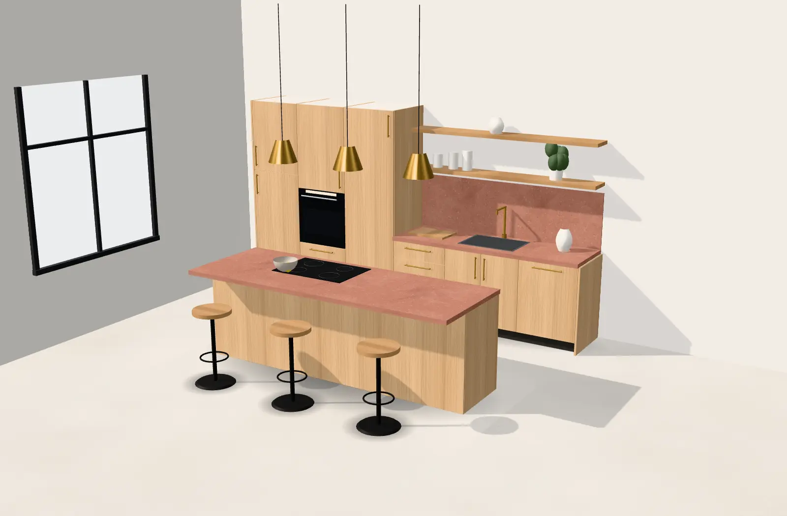
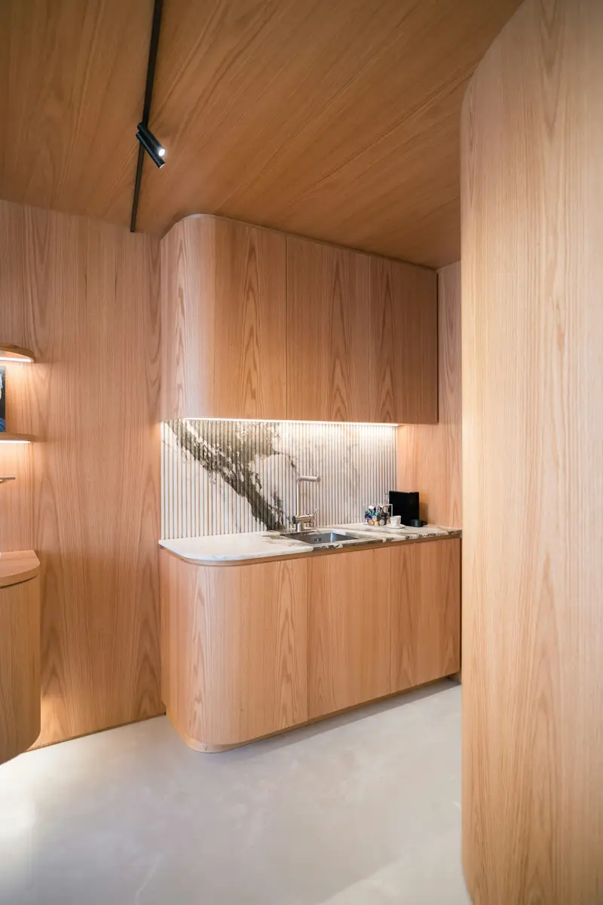
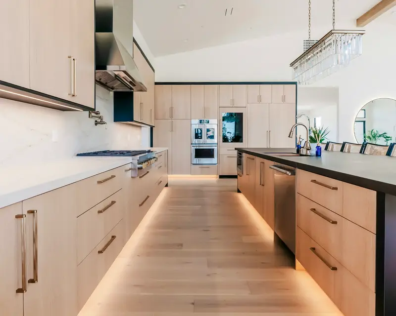
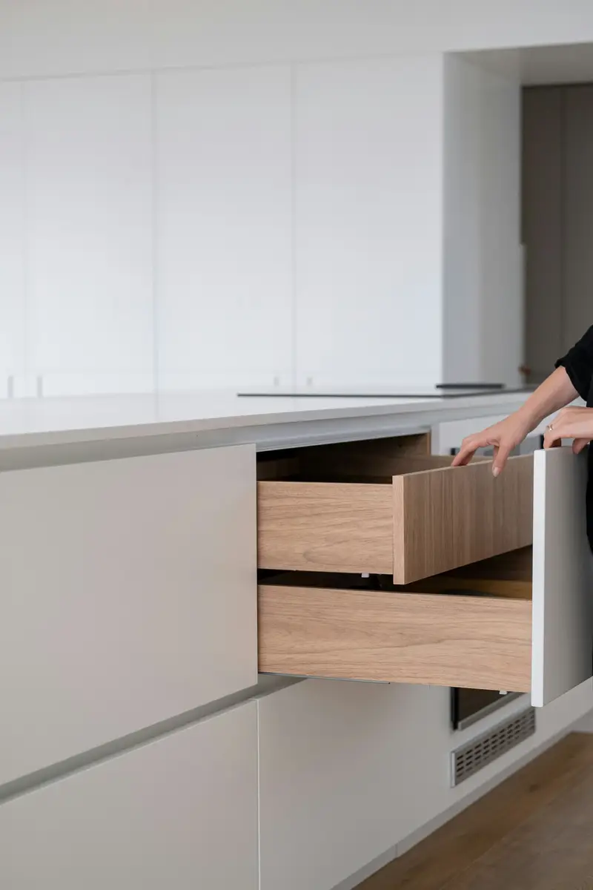

Tournez autour, ouvrez les tiroirs, changez les bois et la pierre : l’estimation se met à jour à chaque choix. C’est le point de départ de votre premier rendez-vous.

Montage de la cuisine…
Glissez pour tourner autour, cliquez sur une façade pour l’ouvrir.
Votre estimation
de 25 100 à 28 800 €
Posée, électroménager non compris. Le prix exact est établi après le relevé chez vous.
Cuisine avec îlot, façades en chêne naturel, plan en grès rose des Vosges, poignées en laiton massif.
Onze menuisiers, un atelier de 1 800 m² et aucun caisson acheté tout fait. Voici ce qui se passe entre votre premier rendez-vous et le jour où vous cuisinez.
semaine 13579
Semaine 1
Le relevé
Nous venons chez vous mesurer au millimètre, photographier les murs et repérer les arrivées d’eau et d’électricité.
Semaines 2 et 3
Le plan
Vous recevez un plan coté et une vue en 3D. On ajuste ensemble jusqu’à ce que chaque tiroir tombe juste.
Semaine 4
Le bois
Chêne et frêne des forêts d’Alsace, noyer de Dordogne, séchés deux ans sous notre hangar. On choisit les plots de votre cuisine.
Semaines 5 à 8
La fabrication
Découpe, placage, assemblage et vernis à l’eau : tout est fait à l’atelier. Chaque caisson porte le nom de celui qui l’a monté.
Semaine 9
La pose
Deux jours chez vous, une équipe de deux. Nous repartons avec les cartons et laissons une cuisine qui ferme sans bruit.
Quelques cuisines posées
Chaque cuisine est unique, mais elles se ressemblent sur un point : on ne voit pas où elle s’arrête et où le mur commence.

Appartement, StrasbourgChêne cintré, crédence en marbre, 3,8 m linéaires31 800 €
Les avis les mieux notés, du plus récent au plus ancien. Avis publiés sur Google par leurs auteurs, sans contrôle de l'atelier.
Avis imaginaires, comme l'atelier. Sur le site d'un client, ses derniers avis Google s'affichent ici et se mettent à jour tout seuls.


Venez ouvrir les tiroirs
Huit cuisines montées, toutes nos matières en grand format et l’atelier juste derrière la vitre. Un rendez-vous dure une heure et demie ; apportez vos mesures, même approximatives.